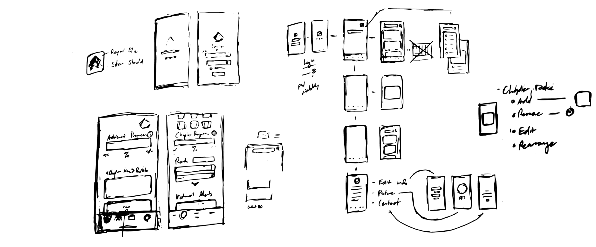
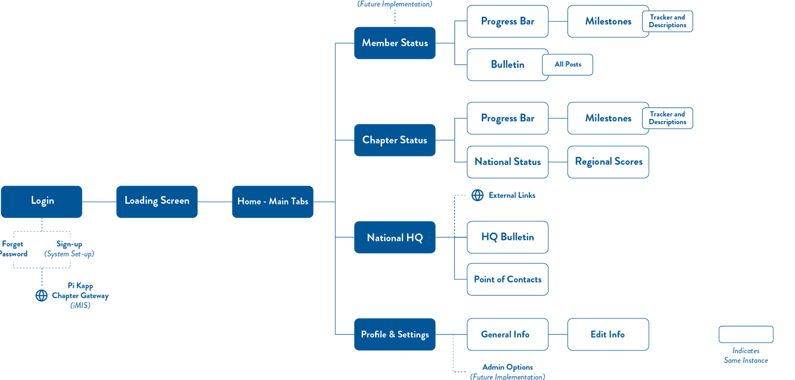
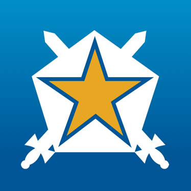
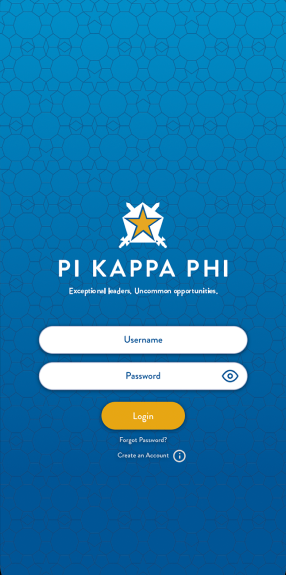
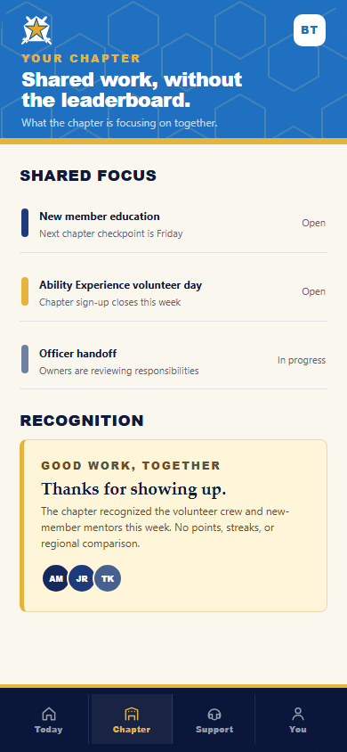

Design
Concept · not shippedPi Kapp
App
A passion project that brought together my love for leadership, helping people stay organized, and design.
Every year looked a little different. The same stuff still had to get done.
Students already had a lot going on: college, financial responsibilities, fraternity milestones, and all the systems around them. As Pi Kapp's lead designer and Assistant Executive Director of Communications, I wanted to see whether one mobile experience could make some of that easier to follow.
I started with the resources we already had, including recruitment guides, and talked with new graduate recruiters, students, executive-board members, and chapter administrators. I also brought my own experience inside the organization.
The same problems kept coming up: things were disorganized, and the system was not flexible when another tool needed to plug in. Every small improvement mattered because gathering everything was already hard enough.
Research context: this was practical internal discovery for an experimental concept, not a funded usability study.
Starting out · Associate member
Brad
Find the first milestones and understand what comes next.
What do I need to do?Helping run it · Chapter secretary
Tyler
Keep up with personal progress while helping the chapter stay organized.
What needs attention?Finishing the year · Graduating senior
Jason
See what is finished, what is left, and how to stay connected.
What is still left?
There was already a system. It was just spread everywhere.
Chapter work moved through spreadsheets, Drive folders, PDFs, documents, financial tools, and the existing gateway. I was not trying to replace all of it. I wanted the member-facing part to feel more like one place.
I sketched the main surfaces first, then mapped the content into four destinations: Member, Chapter, National HQ, and Settings.
The member view held personal progress and chapter updates. The other tabs kept chapter standing, national information, and account details nearby without making the dashboard do everything.
About the integrations: I planned around tools Pi Kapp already used, including iMIS and OmegaFi. I did not build or test those connections.

It still needed to look like Pi Kappa Phi.
I did not need to invent another identity. The app already had a strong mark, clear colors, and a hex pattern I could keep pushing.

The app mark already had enough personality.
I used deep blue for the main information, bright blue when a screen needed more energy, and gold for progress. The star, swords, and hexagons gave me enough to vary the screens without losing the Pi Kapp feel.
The earlier concepts showed how the member view was taking shape.
The Figma explorations and V1 screens brought progress, chapter updates, milestones, and the Pi Kapp identity into a member-facing concept. They were useful for showing direction, but they were not a current product or a finished system.
I now treat these screens as supporting material: snapshots of how I was organizing the idea at the time. They help explain what carried forward, what I would simplify, and why the present-day coda takes a different approach.
Supporting materialThese screens are supporting evidence from earlier concept directions, not the current app.
Earlier concept sequence
V1 concept screens.
The sequence shows how the original identity, member dashboard, and milestone detail were explored before the present-day coda.

A formative start, not a finished product.
This was a passion project. It brought together my love for leadership, helping people stay organized, and a growing interest in product design and research. It also gave me a UX project I could develop for my portfolio.
HQ could feel distant from day-to-day chapter life. The app was one attempt to meet students where they already were, on their phones, and make the organization feel a little easier to reach. The fraternity members, recruitment staff, and HQ colleagues I presented it to responded positively. It felt current and met needs the recruitment team recognized, but it still needed to be fleshed out.
I still do not have usability testing or evidence that the concept was adopted. It remained an experimental study, but it was a neat start and it changed how I thought about meeting an audience halfway.
What I might do with the app today.
The screens below turn the main lessons from the earlier concept into one deliberately small present-day direction.
Three things I would carry forward

Illustrative and unvalidated. A small direction study, not a complete app, current product proposal, or live service.